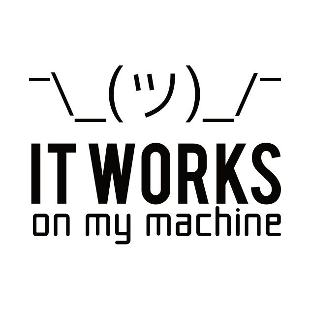
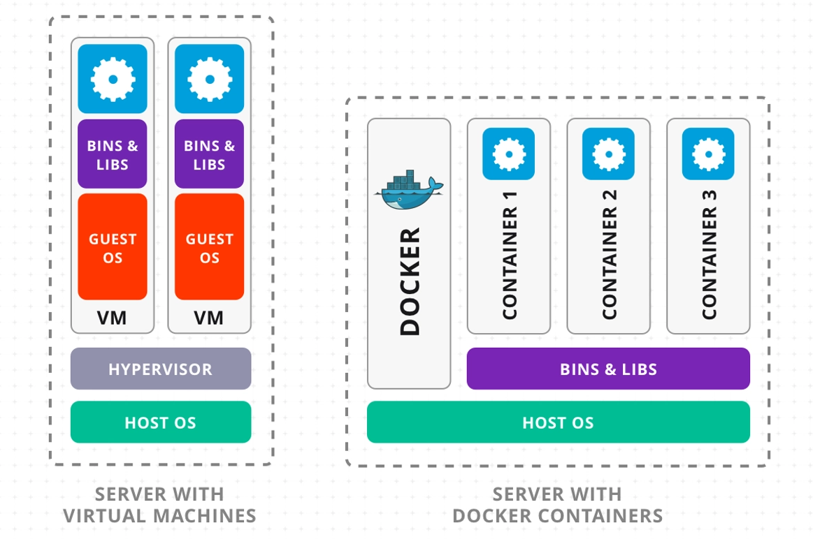

1 / 30
🐳
Docker
Containerização de Aplicações
Dia 3 - Formação em Cloud Computing
Pressione → para continuar
2 / 30
Agenda do Dia 3
Manhã (09:00 - 13:00)
- Introdução aos Containers
- Docker vs Máquinas Virtuais
- Arquitetura Docker
- Imagens e Containers
- Dockerfile
Tarde (14:00 - 18:00)
- Docker Compose
- Volumes e Redes
- Registry e Docker Hub
- Integração com Azure
- Laboratório Prático Completo
3 / 30
O Problema: "Funciona na Minha Máquina!"
😤 Problemas Comuns no Desenvolvimento
- ❌ Ambientes Inconsistentes - Dev vs Prod diferentes
- ❌ Dependências Conflitantes - Versões incompatíveis
- ❌ Configuração Manual - Processo demorado e propenso a erros
- ❌ Difícil Escalabilidade - Replicar ambiente é complexo
- ❌ Desperdício de Recursos - VMs completas para apps simples
💡 Cenário Real: Uma aplicação Python que funciona perfeitamente no laptop do desenvolvedor falha em produção devido a diferenças nas versões de bibliotecas e configurações do sistema operativo.


4 / 30
Docker: A Solução para Portabilidade
🐳
Build Once, Run Anywhere
O que é Docker?
Plataforma de containerização que empacota aplicações e suas dependências em containers portáteis.
Benefícios Principais:
- ✅ Portabilidade - Funciona em qualquer lugar
- ✅ Consistência - Mesmo ambiente em Dev/Test/Prod
- ✅ Eficiência - Containers são leves (MB vs GB)
- ✅ Velocidade - Iniciam em segundos
- ✅ Isolamento - Apps não interferem entre si
- ✅ Escalabilidade - Fácil replicação horizontal
5 / 30
Containers vs Máquinas Virtuais
| Aspecto |
Containers |
Máquinas Virtuais |
| Tamanho |
MB (leves) |
GB (pesadas) |
| Tempo de Início |
Segundos |
Minutos |
| Performance |
Nativa |
Overhead de virtualização |
| Isolamento |
Processo |
Sistema Operativo completo |
| Portabilidade |
Muito alta |
Limitada |
| Recursos |
Compartilha kernel do host |
Recursos dedicados |
Quando usar cada um?
• Containers: Microserviços, CI/CD, aplicações cloud-native, aplicações legacy
• VMs: Isolamento completo, diferentes OS, aplicações legacy
6 / 30
Arquitetura Docker
Docker Client
CLI / API
docker run
→
Docker Daemon
dockerd
Gerencia containers
→
Container Runtime
containerd / runc
Executa containers
Componentes Principais:
- 🖥️ Docker Client - Interface de comando (docker CLI)
- ⚙️ Docker Daemon - Serviço que gerencia Docker
- 📦 Images - Templates read-only para containers
- 🏃 Containers - Instâncias executáveis de imagens
- 🏪 Registry - Repositório de imagens (Docker Hub)
7 / 30
Conceitos Fundamentais
📄 Dockerfile
- Conjunto de instruções para criar uma imagem Docker
- Especifica a imagem base (ex.:
FROM ubuntu:24.04).
- Define comandos para instalar dependências (
RUN apt-get install python).
- Define o comando padrão para execução (
CMD ["python", "app.py"]).
📦 Imagem Docker
- Template read-only com instruções para criar container
- Construída em camadas (layers)
- Cada instrução no Dockerfile cria uma camada
- Camadas são cacheadas e reutilizadas
🏃 Container
- Instância executável de uma imagem
- Adiciona camada read-write sobre a imagem
- Pode ser iniciado, parado, movido e deletado
- Isolado mas pode comunicar através de redes
🏪 Registry
- Servidor que armazena imagens Docker
- Docker Hub - Registry público padrão
- Podem ter registries privados (Azure ACR, AWS ECR)
- Outros registries públicos: GitHub e GitLab Container Registry
8 / 30
Comandos Docker Essenciais
Gestão de Imagens
docker pull nginx:latest
docker images
docker rmi nginx:latest
docker build -t minha-app:v1 .
Gestão de Containers
docker run -d -p 80:80 --name web nginx
docker ps
docker ps -a
docker stop web
docker start web
docker rm web
9 / 30
Docker Run - Opções Importantes
docker run [OPTIONS] IMAGE [COMMAND]
Opções Mais Usadas:
docker run -d nginx
docker run -p 8080:80 nginx
docker run --name meu-nginx nginx
docker run -e NODE_ENV=production node-app
docker run -v /host/data:/container/data app
docker run -it ubuntu bash
docker run --rm alpine echo "Hello"
docker run --memory="512m" --cpus="0.5" app
10 / 30
Dockerfile - Criando Imagens
O que é Dockerfile?
Ficheiro de texto com instruções para construir uma imagem Docker.
Estrutura Básica:
FROM node:18-alpine
LABEL maintainer="email@exemplo.com"
WORKDIR /app
COPY package*.json ./
RUN npm install
COPY . .
EXPOSE 3000
CMD ["node", "server.js"]
11 / 30
Instruções Dockerfile Principais
| Instrução |
Descrição |
Exemplo |
| FROM |
Define imagem base |
FROM ubuntu:22.04 |
| RUN |
Executa comando no build |
RUN apt-get update |
| COPY |
Copia ficheiros do host |
COPY app.js /app/ |
| ADD |
Como COPY mas extrai arquivos |
ADD app.tar.gz /app/ |
| WORKDIR |
Define diretório de trabalho |
WORKDIR /app |
| ENV |
Define variável de ambiente |
ENV NODE_ENV=production |
| EXPOSE |
Documenta porta |
EXPOSE 8080 |
| CMD |
Comando padrão |
CMD ["npm", "start"] |
| ENTRYPOINT |
Executável principal |
ENTRYPOINT ["python"] |
12 / 30
Multi-stage Build
Otimização de Imagens
Reduz tamanho final usando múltiplos estágios de build.
FROM node:18 AS builder
WORKDIR /app
COPY package*.json ./
RUN npm ci
COPY . .
RUN npm run build
FROM node:18-alpine
WORKDIR /app
COPY --from=builder /app/dist ./dist
COPY --from=builder /app/node_modules ./node_modules
EXPOSE 3000
CMD ["node", "dist/server.js"]
Vantagens:
- Imagem final menor (sem ferramentas de build)
- Mais segura (menos superfície de ataque)
- Build reproduzível
13 / 30
Docker Compose
🎼
Orquestração Multi-Container
O que é Docker Compose?
Ferramenta para definir e executar aplicações Docker multi-container usando YAML.
Casos de Uso:
- 📱 Aplicações Multi-tier - Frontend, Backend, Database
- 🔧 Ambientes de Desenvolvimento - Stack completa local
- 🧪 Testes de Integração - Ambiente isolado
- 🚀 Prototipagem Rápida - Deploy de stack completa
💡 Benefício Principal: Um comando para iniciar toda a stack!
docker-compose up
14 / 30
Docker Compose - Exemplo Prático
version: '3.8'
services:
web:
image: nginx:alpine
ports:
- "80:80"
volumes:
- ./html:/usr/share/nginx/html
depends_on:
- api
api:
build: ./api
ports:
- "3000:3000"
environment:
- DB_HOST=database
- DB_PORT=5432
depends_on:
- database
database:
image: postgres:15
environment:
- POSTGRES_PASSWORD=secret
volumes:
- db_data:/var/lib/postgresql/data
volumes:
db_data:
15 / 30
Comandos Docker Compose
docker-compose up
docker-compose up -d
docker-compose down
docker-compose stop
docker-compose logs
docker-compose logs -f api
docker-compose ps
docker-compose exec api bash
docker-compose build
docker-compose build api
docker-compose up -d --scale api=3
16 / 30
Volumes - Persistência de Dados
Tipos de Volumes:
1. Named Volumes
Gerenciados pelo Docker, melhor para produção
docker run --tmpfs /tmp app
Comandos de Volumes:
docker volume create mydata
docker volume ls
docker volume inspect mydata
docker volume rm mydata
docker volume prune
17 / 30
Redes Docker
Tipos de Rede:
- 🌉 bridge - Rede padrão para containers standalone
- 🏠 host - Usa rede do host diretamente
- ❌ none - Sem rede
- 🔧 custom - Redes definidas pelo usuário
docker network create myapp-network
docker run -d --network myapp-network --name db mysql
docker run -d --network myapp-network --name app myapp
docker exec app ping db
docker network ls
docker network inspect myapp-network
18 / 30
Docker Hub e Registries
🏪
Repositório Central de Imagens
Workflow com Docker Hub:
docker login
docker tag myapp:v1 username/myapp:v1
docker push username/myapp:v1
docker pull username/myapp:v1
Registries Privados:
- 🔷 Azure Container Registry (ACR)
- 🔶 AWS Elastic Container Registry (ECR)
- 🔵 Google Container Registry (GCR)
- 🏢 Harbor - Self-hosted
19 / 30
Segurança em Docker
🔒 Boas Práticas de Segurança:
1. Usar Imagens Oficiais e Verificadas
- Prefira sempre imagens oficiais e minimalistas para reduzir a superfície de ataque.
docker pull nginx:alpine # Oficial e minimalista
2. Não Executar como Root
Defina um usuário não-root no Dockerfile para evitar privilégios desnecessários.
USER nonroot # No Dockerfile
3. Scan de Vulnerabilidades
- Utilize ferramentas de segurança para identificar vulnerabilidades em suas imagens.
docker scout cves myapp:latest
Dockerfile Seguro:
FROM node:18-alpine
RUN addgroup -g 1001 -S nodejs && \
adduser -S nodejs -u 1001
USER nodejs
COPY --chown=nodejs:nodejs . .
20 / 30
Azure Container Registry (ACR)
Registry Privado no Azure
az acr create \
--resource-group myRG \
--name myacr \
--sku Basic
az acr login --name myacr
docker tag myapp:v1 myacr.azurecr.io/myapp:v1
docker push myacr.azurecr.io/myapp:v1
docker pull myacr.azurecr.io/myapp:v1
Vantagens do ACR:
- ✅ Integração nativa com Azure
- ✅ Geo-replicação disponível
- ✅ Scan de segurança integrado
- ✅ Webhook e automação
21 / 30
Azure Container Instances (ACI)
⚡
Containers Serverless no Azure
Deploy Rápido sem Infraestrutura:
az container create \
--resource-group myRG \
--name mycontainer \
--image nginx \
--dns-name-label myapp \
--ports 80
az container create \
--resource-group myRG \
--name myapp \
--image myacr.azurecr.io/myapp:v1 \
--registry-username $(az acr credential show --name myacr --query username -o tsv) \
--registry-password $(az acr credential show --name myacr --query passwords[0].value -o tsv)
Casos de Uso:
- 🚀 Tarefas batch e jobs
- 🧪 Ambientes de teste temporários
- 📊 Processamento de dados on-demand
22 / 30
Docker em Produção
📋 Checklist para Produção:
Imagens
- ✓ Multi-stage build
- ✓ Imagens minimalistas (Alpine)
- ✓ Scan de vulnerabilidades
- ✓ Tags específicas (não latest)
Segurança
- ✓ Usuário não-root
- ✓ Secrets management
- ✓ Network policies
- ✓ Read-only filesystem
Performance
- ✓ Limites de recursos
- ✓ Health checks
- ✓ Graceful shutdown
- ✓ Cache de layers
Monitorização
- ✓ Logging centralizado
- ✓ Métricas e alertas
- ✓ Distributed tracing
- ✓ Container insights
23 / 30
Troubleshooting Docker
🔍 Comandos de Diagnóstico:
docker logs container_name
docker logs -f --tail 50 container_name
docker exec -it container_name bash
docker exec container_name ps aux
docker inspect container_name
docker top container_name
docker stats
docker diff container_name
docker cp container_name:/path/to/file ./local_file
Problemas Comuns:
- ❌ Container exits immediately → Check logs e CMD
- ❌ Cannot connect → Verificar port mapping e firewall
- ❌ Permission denied → User permissions e volumes
24 / 30
Orquestração: Swarm vs Kubernetes
| Aspecto |
Docker Swarm |
Kubernetes |
| Complexidade |
Simples |
Complexo |
| Learning Curve |
Baixa |
Alta |
| Funcionalidades |
Básicas |
Avançadas |
| Comunidade |
Menor |
Enorme |
| Auto-scaling |
Manual |
Automático |
| Uso Ideal |
Projetos pequenos/médios |
Projetos grandes/enterprise |
💡 Recomendação: Para estudo, comece com Docker Compose, evolua para Kubernetes com minikube ou k3s rodando localmente ou Kubernetes em um cloud provider.
25 / 30
Casos de Uso Reais em Angola
🏦 Sector Bancário
- Microserviços para APIs bancárias
- Ambientes isolados para testes de compliance
- Deploy rápido de novas funcionalidades
📱 Telecomunicações
- Processamento de dados em batch
- APIs de integração com parceiros
- Análise de tráfego e billing
🏢 Governo e Serviços Públicos
- Portais de serviços ao cidadão
- Sistemas de gestão documental
- Integração de sistemas legacy
💡 Benefícios para Angola:
- Redução de custos de infraestrutura
- Maior agilidade no desenvolvimento
- Facilita trabalho remoto de equipas
- Preparação para transformação digital
26 / 30
Exercício Prático
🎯 Desafio: Deploy de Aplicação MEAN Stack
Criar ambiente completo com:
- MongoDB (Database)
- Express + Node.js (Backend API)
- Angular (Frontend)
- Nginx (Reverse Proxy)
Requisitos:
- Usar Docker Compose
- Implementar volumes para persistência
- Configurar rede isolada
- Variáveis de ambiente para configuração
- Health checks em todos serviços
- Push para ACR
- Deploy em ACI
⏱️ Tempo: 2 horas
📚 Recursos: Usar documentação oficial e cheat sheets
27 / 30
Recursos e Documentação
📚 Documentação Oficial
- 🔗 Docker Docs: docs.docker.com
- 🔗 Docker Hub: hub.docker.com
- 🔗 Docker Compose: docs.docker.com/compose
- 🔗 Best Practices: docs.docker.com/develop/dev-best-practices
🎓 Cursos e Tutoriais
- Docker Mastery (Udemy)
- Play with Docker (Online Labs)
- Katacoda Docker Scenarios
🛠️ Ferramentas Úteis
- Dive - Analisar layers de imagens
- Portainer - UI para gestão Docker
- Hadolint - Linter para Dockerfile
- Docker Slim - Otimizar imagens
28 / 30
Resumo do Dia
✅ O que Aprendemos:
- Conceitos fundamentais de containerização
- Diferença entre Containers e VMs
- Arquitetura e componentes Docker
- Criar imagens com Dockerfile
- Orquestrar com Docker Compose
- Volumes e redes
- Integração com Azure (ACR e ACI)
- Boas práticas de segurança
🎯 Próximos Passos:
- Praticar com projetos pessoais
- Explorar Docker Swarm
- Preparar para Kubernetes (amanhã!)
- Implementar CI/CD com Docker
29 / 30
Perguntas e Respostas
Tempo para Dúvidas
Quais são as vossas dúvidas sobre Docker?
Tópicos Comuns:
- Docker em produção
- Migração de aplicações existentes
- Integração com CI/CD
- Custos e licenciamento
- Docker Desktop vs Docker Engine
30 / 30
🐳
Obrigado!
Agora sabemos um pouco mais sobre Docker! 🎉
Amanhã: Dia 4 - Terraform
Infrastructure as Code